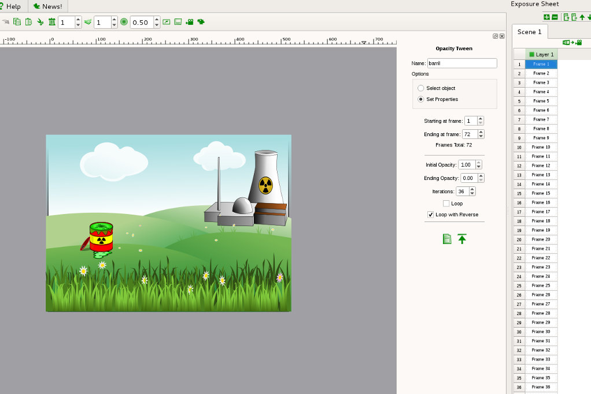

Tweening de Opacidade no Tupi
Introdução
O tweening de opacidade do Tupi permite gerar frames automaticamente com alterações na opacidade de um objeto.

Exercício
Neste exercício vamos utilizar as imagens vetoriais nuclear e nuclear1 (adaptadas da imagem disponível em OpenClipart).
{kind=link}
{kind=link}
1. Comece por criar uma pasta para o seu projeto e por criar um projeto tupi.
2. Importe as imagens disponibilizadas para o projeto.
3. Ative o Static BG Mode e importe a imagem de fundo para o palco. Redimensione de forma a esta ocupar o fundo.
4. Ative o Frames Mode e importe o barril. Posicione o barril no local indicado pela imagem abaixo. Repare que estamos na frame 1.
5. Ative a ferramenta de Opacity Tween. Introduza um nome para o tween e clique no sinal + para criar o tween.
6. Selecione o objeto a que vai aplicar o tween. Clique em cima do barril, este deverá ficar com uma moldura tracejada.
7. Clique em Set Properties para definir as propriedades do tween.
O tween que vamos criar vai ter 72 frames, começa na 1 e termina na 72.
A imagem começa com opacidade a 1 e termina com opacidade a 0.
A alteração da opacidade vai durar 36 frames.
O tween vai ter a opção Loop with Reverse ativada. Ou seja, na frame 1 o barril é visível, na 36 o barril está totalmente transparente e na 72 volta a estar totalmente visível.
No final, clique no botão de gravar para gerar as frames.
8. O tupi vai gerar as frames da animação....
Em filme...
(Link para ficheiro aqui)